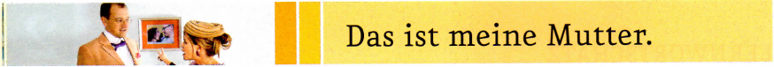
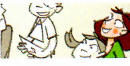
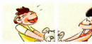
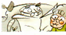
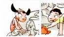

Hören Sie noch einmal und sprechen Sie nach.
Familie die, -n
Vater der, ¨
Mutter die, ¨
Eltern(Pl)
Sohn der, ¨e
Tochter die, ¨
Großvater der, ¨ / Opa der, -s
Großmutter die, ¨ / Oma die, -s
Großeltern(Pl)
Enkelin die, -nen
Enkel der, -
Bruder der, ¨
Schwester die, -n
Geschwister(Pl)
(Ehe)Mann der, ¨er
(Ehe)Frau die, -en
Sprache die, -n
sprechen, du sprichst, er spricht
Deutsch
Welche ...?
Wie viele ...?
Bild das, -er
Freund der, -e
Kollege der, -n
Partner der, -
ja
nein
doch
ein bisschen
bitte
genau
mein
dein



